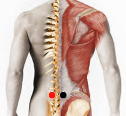

Calcificación
Generalidades:
La calcifiación: es una acumulación de calcio en algún tejido del cuerpo como puede ser en los músculos, tendones, o algún otro órgano. Los lugares más comunes de acululación suelen ser: los hombros, el cerebro, los senos, arterias con arterioesclerosis, neoplasias, tumores y la próstata. Se debe a que el calcio no puede ser disuelto correctamente en la sangre, lo cual puede deberse a un trastorno en el metabolismo del calcio
Los espolones, algunos tipos de piedras en el riñón, los cayos y el sarro de los dientes también son procesos en los que se acumula calcio.
Calcificación lumbar:
Pares
lumbar 4 - lumbar 4

Síntomas: impide el movimiento natural de la cintura.